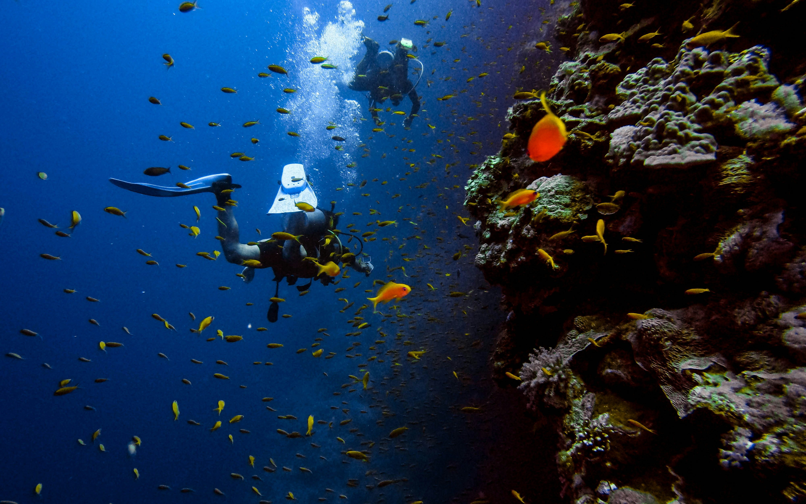
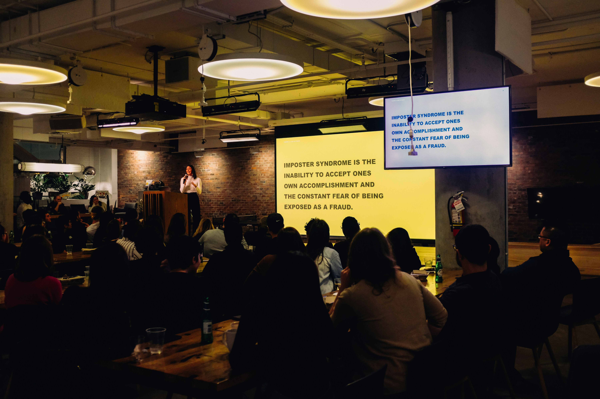
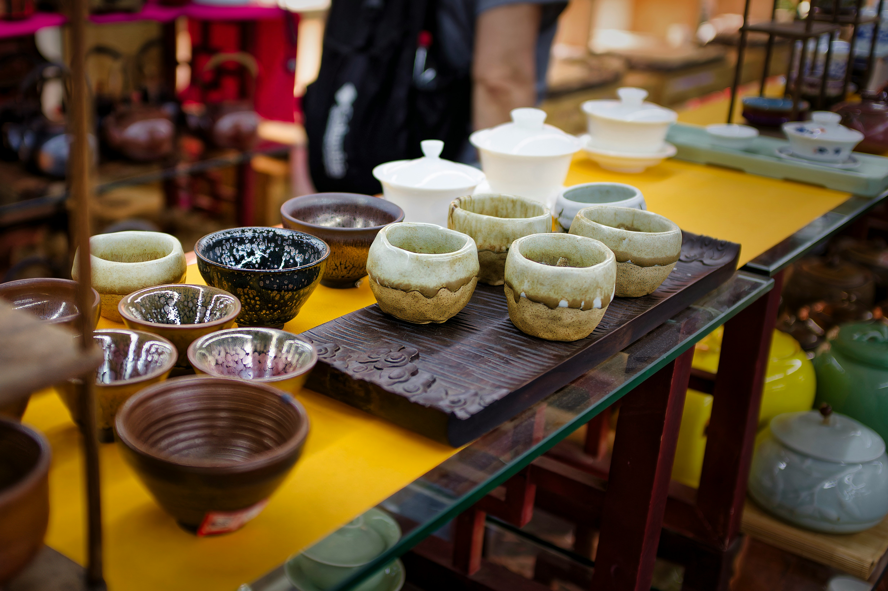
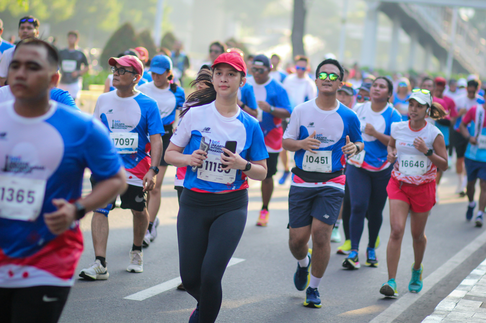

20 juli 2026 — Manado Convention Center.
Manado Convention Center 2024
Konferensi teknologi terbesar di Sulawesi Utara, menghadirkan pembicara dari
Google, Gojek, dan Tokopedia. Topik utama meliputi AI, Web Development, dan
Cybersecurity.
Tiket tersedia mulai Rp150.000 untuk pelajar dan Rp300.000 untuk umum.
Kapasitas terbatas 500 peserta.
5-7 Agustus 2026 — Lapangan Taruna Remaja Gorontalo.
Gorontalo Food Festival 2025
Festival kuliner terbesar di Gorontalo menghadirkan 50+ stand makanan khas
daerah — binde biluhuta, sate tuna, ilabulo, hingga kue cucur. Ada
juga lomba memasak antar kelurahan dan penampilan musik tradisional
Gorontalo setiap malam.
Gratis untuk pengunjung umum
Automotif Workshop: ECU Tuning Dasar
15 Agustus 2026 — SMK Negeri 1 Manado.
Automotif Workshop 2025
Workshop praktik langsung setting ECU motor injeksi untuk pemula. Peserta
akan belajar cara reset ECU, setting altitude, dan dasar-dasar sensor injeksi
(MAP,TPS,IAT). Dibimbing langsung oleh teknisi berpengalaman dari
bengkel resmi Yamaha Sulawesi.
Kuota hanya 30 Peserta, Klik link dibawah untuk daftar sekarang
Sebelum Penuh.
Klik Disini
Sulawesi Photography Contest
1 September 2026 — seluruh wilayah Sulawesi.
Photography Contest 2023
Kompetisi foto bertema "Keindahan Alam Sulawesi" terbuka untuk untuk semua
kalangan. Kategori:
Landscape
Portrait
Street Photography
Total Hadiah Rp15.000.000 untuk juara 1, 2, dan 3 di masing
-masing kategori.
Pengumpulan karya via website resmi EventHub
Coding Bootcamp for Beginners
10 September 2026 — Online via Zoom.
Coding Bootcamp On-site in Manado 2024
Bootcamp intensif 5 hari Khusus pemula yang mau belajar web development dari nol.
Materi mencakup HTML, CSS, dan JavaScript dasar. Mentor berpengalaman dari industri
teknologi indonesia.
Biaya Pendaftaran Rp200.000 sudah termasuk Sertifikat dan akses materi seumur hidup. Klik link dibawah untuk info lebih lanjut
Klik Disini
Manado International Diving Festival
25 September 2026 — Bunaken Manado.

Diving Festival 2022 — Bunaken Manado
Festival diving international yang dihadiri peserta dari 15 negara. Ada demo diving,
underwater photography competition, dan seminar konservasi terumbu karang.
Terbuka untuk penyelam profesional maupun pemula dengan instruktur bersetifikat.
Past Events:
Sulawesi Dev Meetup
10 Mei 2026 — Manado.

Dev Meetup in Manado — 10 Mei 2026
Pertemuan developer se-Sulawesi yang dihadiri 200+ peserta dari berbagai latar belakang
— web developer, mobile developer, hingga data scientist. Sesi diskusi membahas
tren teknologi 2026 dan peluang karir di industri tech Sulawesi.
Acara berlangsung 8 jam dengan 5 sesi talk dan 2 workshop paralel.
Klik disini untuk lihat dokumentasinya.
Gorontalo Music Night
3 April 2026 — Café Bunto Gorontalo.
3 April 2026 — Café Bunto Gorontalo
Pertunjukan musik yang menampilkan 10 band lokal Gorontalo membawakan genre dari pop,
jazz, hingga musik tradisional Gorontalo. Dihadiri lebih dari 300 penonton, acara
berlangsung hingga tengah malam dengan suasana yang meriah.
Tiket terjual habis 2 hari sebelum acara.
Web Design Bootcamp
1-3 Maret 2026 — Online
No Documention, just Ilustration
Bootcamp HTML & CSS intensif 3 hari yang diikuti 500 peserta dari seluruh Indonesia.
Peserta belajar membuat website responsif dari nol hingga deploy ke hosting.
Tingkat kelulusan mencapai 87% dengan rata-rata peserta berhasil menyelesaikan
3 project nyata selama bootcamp.
Sulawesi Startup Pitch Competition
14 Februari 2026 — Hotel Aryaduta Manado
Sulawesi startup pitch competition — 14 Februari 2026
Kompetisi pitch startup se-Sulawesi yang diikuti 45 tim dari berbagai kota. Pemenang
mendapatkan pendanaan awal Rp 100.000.000 dari investor lokal dan mentoring intensif
selama 6 bulan.
Kategori pemenang meliputi:
Tech Startup
Social Enterprise
Agritech
Traditional Craft Exhibition Gorontalo
20 Januari 2026 — Museum Purbakala Gorontalo

Gorontalo Traditional Craft — 20 Januari 2026
Pameran kerajinan tangan tradisional Gorontalo yang menampilkan 80+ pengrajin lokal.
Produk unggulan seperti kain karawo, keramik, dan anyaman bambu dipamerkan dan dijual
langsung.
Dikunjungi lebih dari 1.000.500 pengunjung selama 3 hari pameran berlangsung.
Manado Marathon 2026
5 Januari 2026 — Kawasan Megamas Manado

Manado Marathon — 5 January 2026
Lomba lari internasional yang diikuti 3.000+ peserta dari 20 negara dengan kategori
full marathon, half marathon, dan fun run 5K. Rute melewati jalanan ikonik Kota
Manado dengan pemandangan Teluk Manado yang memukau.
Juara umum kategori full marathon berhasil menyelesaikan rute dalam waktu
2 jam 18 menit.